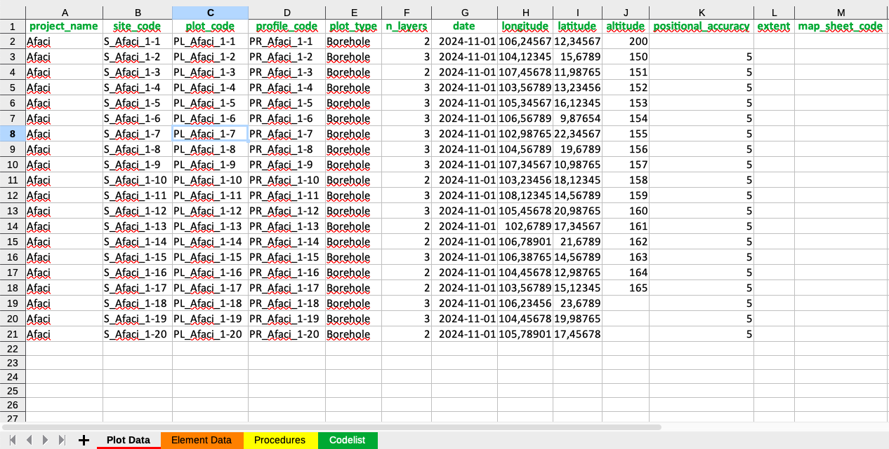

5 Understanding the XLSX Template
The Excel file consists of multiple sheets that correspond to different database tables:
- Project & Site Data (Includes
site_code,plot_code,profile_code,latitude,longitude) - Soil Layer Data (Includes
element_code,upper_depth,lower_depth,ph,soc,clay, etc.) - Procedures Mapping (Links
property_phys_chem_idwithprocedure_phys_chem_idandunit_of_measure_id)
These sheets are extracted and transformed before being injected into PostgreSQL.
The template (Figure 5.1) is the graphical interface where you can register your soil data to be injected into PostgreSQL (Figure ??).

Figure 5.1: xlsx template.